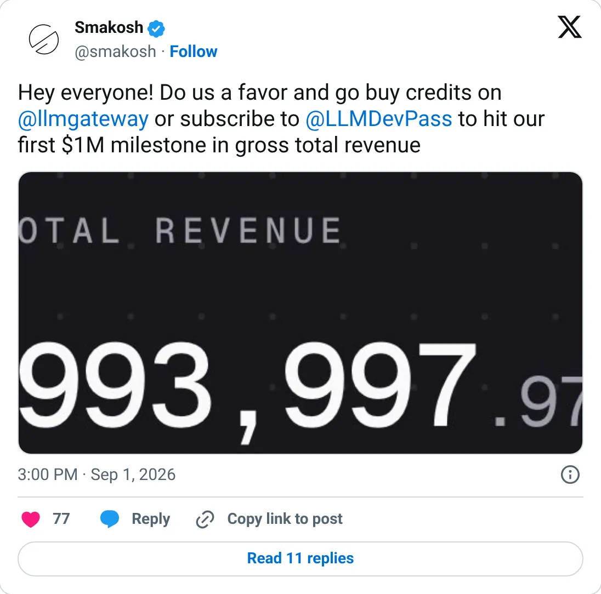
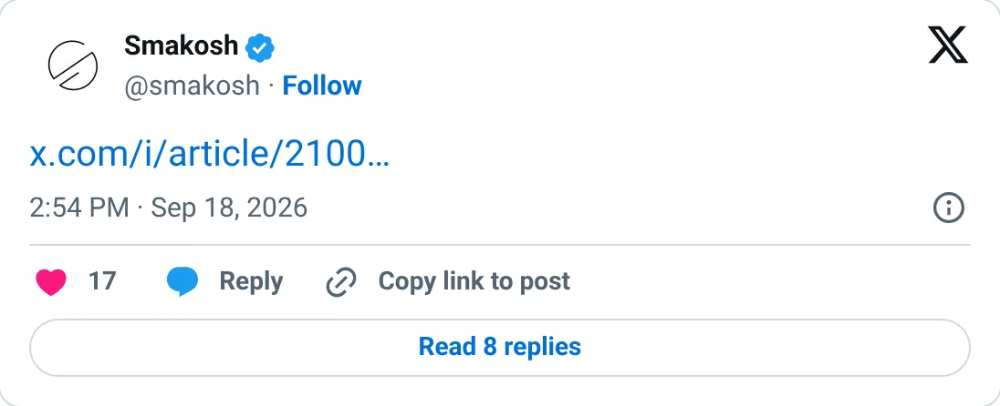

Not a pick
LLM Gateway
A real-looking company with a headline you should not plan against.
$78,764 MRR · $259,539 last 30 days (incl. credits)
Should you build this
The company may be real. The figure on the card is a peak, a stale year, a cash month, or an average. LLM Gateway's Stripe MRR on September 7, 2026 was $78,764, with about $1M all-time. The headline puts $259,539 of last-30-day volume beside it and says that includes credits. Credits are customer prepay sitting on the platform, not the company's revenue. A September 18 article then says “LLM Gateway at $1.2M”. Twelve times the MRR is about $945K. The extra comes from treating throughput as sales. The processor MRR holds. The number a skimmer remembers does not.
Cited from the captured posts, shown below: the earliest captured post (Sep 1, 2026); the latest milestone (Sep 18, 2026) is the source for “Article: "LLM Gateway at $1.2M"”.
Posts this is based on

Open on X

Article: "LLM Gateway at $1.2M"
Open on X
What the product is
Open-source API gateway that routes requests to many LLM providers, with usage analytics and cost tracking.